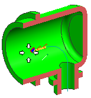
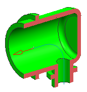
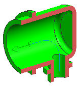

Create a fitting port on this connector
This port that will mate with the multi port on the circular connector.
-
From the Routing Object list, right-click the Fitting node and choose New.
You will want this port to originate at the upper end point of the sketch line.
-
Make sure that the Filter is set to Point.
-
On your Selection bar, first make sure
 is on, and then turn on
is on, and then turn on  .
.
-
Turn off all the other Snap Points.
-
Select the end point of the sketch curve.

-
Click the middle mouse button to advance to the Align Vector step.
The port vector arrow must point away from the center of the backshell.

If it does not, click Cycle Direction.
-
Click OK twice.
